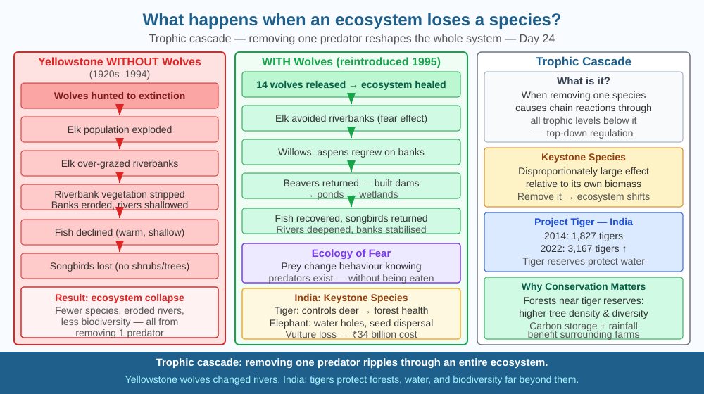

By the end of this lesson, you should be able to define trophic cascade, explain the Yellowstone wolf example, and predict what happens when a keystone predator is reintroduced.
In 1995, 14 wolves were reintroduced into Yellowstone National Park, USA, after a 70-year absence. Within 10 years, not just the deer population changed — rivers changed their course, songbirds returned, and fish populations recovered. How can one predator change a river?
Trophic cascade: When a predator is removed or added at the top of a food chain, effects ripple down through all lower trophic levels.
The Yellowstone Wolf story (step by step): 1. Wolves were hunted to extinction in the 1920s. 2. Elk (deer) population exploded with no predators. 3. Elk over-grazed riverbanks and valleys, stripping vegetation. 4. Without vegetation, riverbanks eroded. Rivers meandered and became shallow. 5. Fish declined (less shade, warmer water, less structure). 6. Songbirds declined (no shrubs and trees).
After wolf reintroduction: 1. Elk changed their behaviour — avoided riverbanks and valleys (fear effect). 2. Willows, aspens, and cottonwoods regrew along rivers. 3. Beavers returned (they need willows) — built dams → ponds → wetlands. 4. Fish recovered. Songbirds returned. Rivers deepened and stabilised their banks. 5. The wolves "changed the rivers" — not by eating them, but by triggering a behaviour cascade.
Keystone species: A species that has a disproportionately large effect relative to its biomass. Often predators, but can be ecosystem engineers (beavers, elephants), pollinators (bees), or even plants (fig trees that feed hundreds of fruit-eating species).
India examples: - Tiger as apex predator: tiger prey (deer, wild boar) regulate forest understory. - Elephant as ecosystem engineer: creates waterholes that hundreds of species use; opens forest clearings; disperses seeds. - Vulture collapse in India (1990s): loss of 99 % of vultures due to diclofenac in cattle carcasses led to feral dog population explosion → increase in rabies deaths → estimated $34 billion economic cost.
Think of a trophic cascade as a domino chain arranged in a circle, not a line. Removing one domino does not stop one piece from falling — it changes which pieces can even stand.
Step through the logic: 1. The top predator keeps herbivore numbers in check — not just by eating individuals, but by frightening them away from feeding in exposed places (this is the "landscape of fear"). 2. Herbivores at reduced numbers (or fearful behaviour) allow vegetation to grow — especially in vulnerable zones like riverbanks, where grazing was previously intense. 3. Vegetation roots hold soil — preventing bank erosion. More shade cools water. More structure means fish habitat returns. 4. Fish and insects attract birds — songbird populations recover. 5. Riparian trees attract beavers — beaver dams create ponds, which raise the water table, which grows more trees, which attracts more beavers. A positive feedback loop starts.
The crucial point: the wolf did not directly interact with the river or the songbirds. Its effects propagated through behaviour change → vegetation → geomorphology → aquatic life. This is why ecologists say predators can "change rivers through fear."
The SVG shows two side-by-side river cross-sections labeled "Wolves Absent" and "Wolves Present." In the left panel, elk silhouettes cluster on a bare, eroded riverbank; the river channel is shallow and wide, coloured pale brown. In the right panel, wolves appear on high ground; elk silhouettes are sparse and away from the bank; the riverbank shows dense green willow and aspen; the channel is deeper and blue. Connecting the two panels is a central flow diagram: wolf removal → elk increase → overgrazing → erosion → shallow river, and wolf return → elk fear → vegetation grows → bank stability → deep river. A third inset in the bottom right shows India's vulture cascade: vulture icon crossed out → cattle carcass pile → feral dog numbers spike → rabies icon with rupee symbol labelled "$34 billion." Colour-coded arrows (red for decline, green for recovery) make the cascade direction immediately legible.

India's Project Tiger is one of the world's most successful conservation programmes. Tigers were down to 1,827 in 2014; by 2022 there were 3,167. Beyond tigers themselves, the reserves protect forest that provides water catchment, carbon storage, and rainfall to surrounding agricultural areas. Studies show that forests near tiger reserves have significantly better tree density and diversity — a trophic cascade protecting biodiversity well beyond the apex predator.
Garden experiment: In a patch of garden or even a pot, remove all the caterpillars (a "herbivore removal"). Observe over several weeks: do plants grow more? Do fewer butterflies visit? Do other insects increase? Does soil quality change (fewer caterpillar droppings = less nitrogen deposition)? You are running a mini trophic cascade experiment.
Record your observations in a simple table: species observed before removal vs. two weeks after. Note any unexpected changes — insects or birds that appeared or disappeared that you did not expect to be affected. These unexpected links are exactly what ecologists look for when mapping cascades.
The "ecology of fear" is a concept that emerged from Yellowstone: prey animals change their behaviour in response to predator presence, even before being eaten. Elk avoided riverbeds not because wolves killed them there — wolves killed them everywhere — but because they were more vulnerable there. This behavioural change caused the vegetation recovery. Scientists now measure the "landscape of fear" using GPS-tagged animals to map where prey spend time. The finding challenges simpler food-chain models: you don't have to eat an animal to control its population. Predators reshape ecosystems through fear as much as through teeth.
Predict: In Ranthambore Tiger Reserve (Rajasthan), tourist jeeps follow tigers for hours each day. Research suggests that tigers in heavily touristed reserves spend less time in exposed feeding zones and more time in dense cover. Using the ecology-of-fear framework, predict how this change in tiger behaviour might affect deer feeding patterns, riverbank vegetation, and bird diversity in Ranthambore. Is ecotourism potentially causing its own low-level trophic cascade?
What is a trophic cascade in an ecosystem?
Correct answer: B
Why is understanding species interdependence more useful than knowing a species is gone?
Correct answer: C
If wolves were reintroduced to an ecosystem where they had been absent, what would you predict?
Correct answer: A
India's Sariska Tiger Reserve in Rajasthan lost all its tigers by 2005 due to poaching. In 2008, tigers were reintroduced. Ecologists measured vegetation cover, deer density, and stream bank stability before and after reintroduction.
Design the data collection protocol you would use to detect a trophic cascade over a five-year period. Specify: (a) which three species or ecosystem variables you would measure and why each one is a good indicator of cascade effects; (b) where in the reserve you would place your monitoring sites and why; (c) what a "cascade has occurred" would look like in your data — give specific numerical thresholds or directional changes. Then predict whether the Sariska cascade would be faster or slower than Yellowstone's, and explain why using differences in ecosystem type and prey behaviour.
When wolves were reintroduced to Yellowstone, the carcasses they left behind — of elk they killed — fed over 200 species of beetles, ravens, wolverines, bears, and eagles. A single wolf-killed elk provides more nutrients to the surrounding ecosystem than the elk ever would have by dying of old age (old animals are eaten by fewer scavengers before decomposing). Ecologists call this "carrion subsidy" — predators are not just population controllers, they are fertiliser distributors. Yellowstone's rivers downstream of wolf territories have measurably higher concentrations of nutrients because carcasses decompose near streams, feeding invertebrates that feed fish. A single apex predator shapes the chemistry of water dozens of kilometres away.
A trophic cascade means that removing or adding one species — especially a top predator — ripples through every level of an ecosystem, changing the behaviour, population, and even physical landscape of species it never directly contacts.